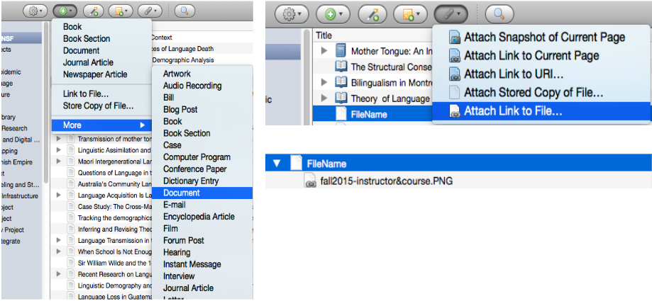
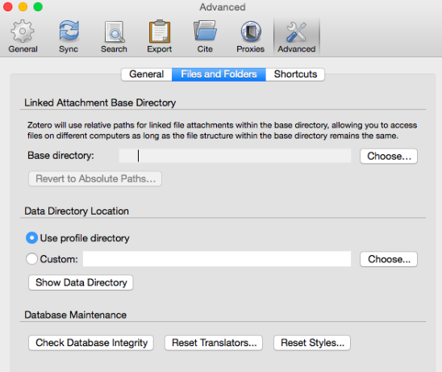

Managing a Personal Research Archive
Vicky Steeves & Nick Wolf | DATE
Managing a Personal Research Archive: Basic Principles

- Use a file management system to annotate and locate files; use a systematic file naming system.
- Use "readme" files to annotate and explain file content.
- Use open sustainable file formats that are software agnostic.
NYU Storage Resources
| NYU Google Drive | NYU Box | |
|---|---|---|
| Intended use | Personal archive not including sensitive or secure data | Departmental & personal research with a focus on sensitive or secure data |
| Storage size | Unlimited | Unlimited |
| Sharing and user control | Yes | Yes |
| Versioning and file change tracking | Some | Yes |
Setting up a Cloud Environment:
NYU’s Google Drive
- Download the Drive App for Desktop. This will allow you to integrate your cloud with some file managers like Zotero.
- Know your root directory for your desktop app, e.g.:
MAC | /users/NAME/google drive
Windows | C:\users\NAME\google drive - Remember that files saved to this directory are saved locally first, and then synced with the Drive cloud as scheduled.
- BONUS: Get phone and tablet apps to integrate with mobile data management applications like TurboScan
Zotero as a File Management Tool
- Zotero is normally used as a bibliographic management tool.
- But...elements in a Zotero library can be annotated with tags and text notes.
- Zotero will also store links to files, either as a standalone library entry, or as a child element linked to a bibliographic record.
Note: NYU Libraries provides support for learning Zotero. See the Zotero LibGuide for more information.
Zotero as a File Management Tool
For example, create a “Document,” and name it after the filename you want to annotate. Enter identifying data and attach notes. Last, attach a link to the file.
Zotero as a File Management Tool
Use Zotero to manage files on Google Drive or any other cloud service by going to Preferences >> Advanced >> Files and Folders and changing the base directory:
Project Management with the 
Open Science Framework
- FREE, open source (view the source on GitHub!) platform
- Designed to add efficiency to research workflow
- Connects to other tools and services
Managing Files 1: Bulk File Renaming (Windows)
- Download the rename.bat script and save it as rename.bat in the directory of files you wish rename. You may wish to try it on these sample files.
- Go to the Windows Start Menu and type "run cmd"
- Navigate to the directory to the folder containing the files you want to change. For example: type cd documents to change files in a folder called “documents”.
- type rename.bat and hit enter to transform your files!
Managing Files 1: Bulk File Renaming (Windows)
Let’s test out a few more cool scripts to do some useful bulk transformations.
- Download renamePre.bat & renameSeq.bat
- Stay in the command line & in the directory you want to work in!
- type renameSeq.bat and hit enter.
- type renamePre.bat and hit enter.
Managing Files 1: Bulk File Renaming (Mac OSX)
- Download the file_rename_MAC script in the directory of files you wish rename. You may wish to try it on these sample files.
- From the Mac Launchpad, look for Terminal and open it.
- Change working directory to the folder containing the files you want to change. For example, type cd Desktop/directory to change files in a folder called “directory” on the desktop.
- type bash file_rename_MAC
Project Management with the
Open Science Framework
- Wiki: document your lab procedures, standards, etc.
- Collaborators: add collaborators of various levels to different parts of your project
- Components: sub-projects to organize different parts of your research
- Version Control: upload files of the same name & OSF will track your versions!
- Add-Ons: use OSF to bring together tools you use | GitHub
- Registrations: when you have an unchanging version of your project, register it & get a DOI!
Thank you! Questions?
Email us: vicky.steeves@nyu.edu & nicholas.wolf@nyu.edu
Learn more about RDM: guides.nyu.edu/data_management
Get this presentation: guides.nyu.edu/data_management/resources
Make an appointment: guides.nyu.edu/appointment